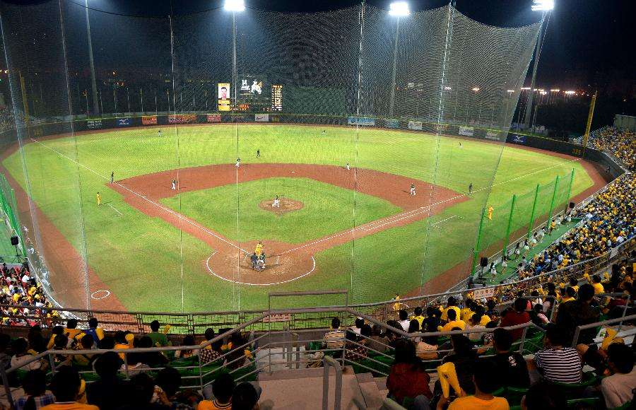
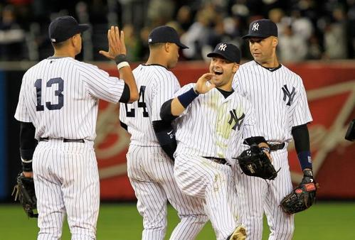
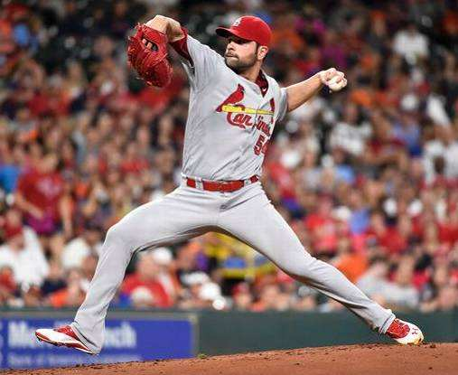
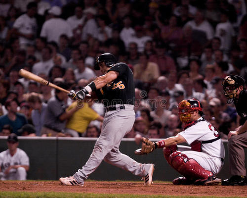

根棒球最相似的是垒球。垒球从棒球发展过来，一般看来可能会让人觉得男子运动叫棒球，女子项目叫垒球，其实也有男子垒球队。之所以产生这样的错觉，是因为奥运会棒球只设男子度项目，垒球只设女子项目，而且比棒球晚进奥运4年。

两队比赛，每队各有9人，两队轮流攻守。攻队队员在本垒依次用棒击打守队投手投来的球，并乘机跑垒，能依次踏过1、2、3垒并安全回到本垒者得一分。棒球比赛的球场呈直角扇形，有四个垒位。球棒用木或铝制，球用明线缝球皮。防守队员均应戴手套。捕手及1垒手可戴连指手套。捕手要有面罩、护胸、护腿等护具。击球员要戴护帽。球鞋用皮革制，前后掌各有扁形钉3枚。

纽约扬基队（New York Yankees，缩写为NYY）曾在43次美国职业棒球大联盟联赛的“世界大赛”中赢得27次冠军


紧跟其后的分别为圣路易红雀队与奥克兰运动家队的9次冠军